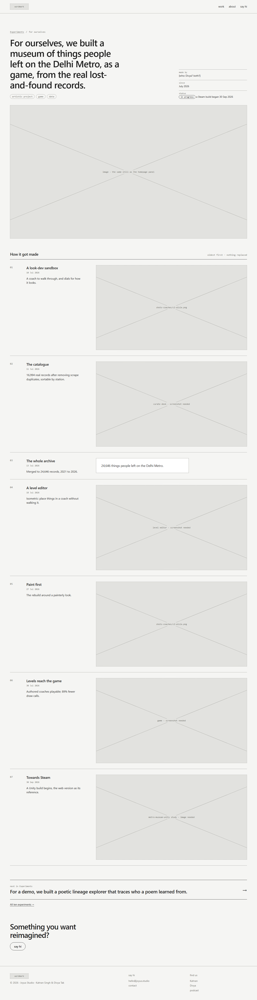
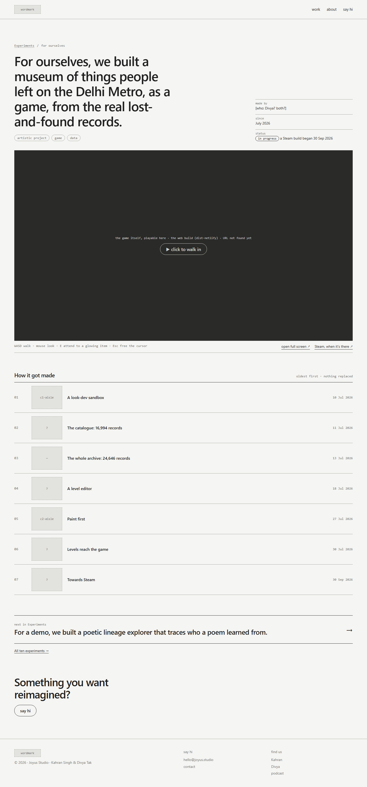
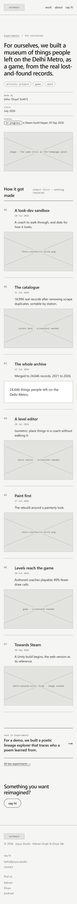
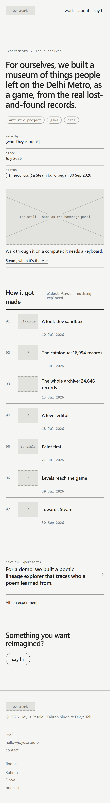

Study 05 · 1 October 2026
The experiment page
Where the homepage panel lands when the Experiments pill is up: 10 of these. They differ from client work in two ways: there is no client, and the thing itself can often be used. One decision: does the page tell the story of the experiment, or hand you the experiment? Built with Metro Museum of the Forgotten, the first piece in the pill, from its own git history.
What changes from the piece page (Study 04), and why
| Part | On a piece page | On an experiment page | Why |
|---|---|---|---|
| Crumb | Pill / Client | Experiments / for ourselves (not a link) | There's no client page to go up to. "For ourselves" is the sentence's own opening. |
| Facts | client · when · shape | made by · since · status | Experiments are often unfinished. Metro Museum is mid-flight: a Steam build began on 30 Sep. Saying so is more honest than a date range with no end. |
| Also for <client> | the client's other pieces | gone | The family is the pill. "Next in Experiments" plus "All ten experiments →" covers it without a third list. |
| Links out | none | "open full screen ↗", "Steam ↗" | A live build and a store page are off the site. Study 03 had no page type for that; this study adds external. |
The decision: the story of it, or the thing
A · Like a piece
A still, then seven rounds with images, as Study 04's A. Open A

B · The thing first
The game in the hero slot, playable; the rounds shrink to a one-line log. Open B

Does B work beyond Metro Museum?
B only holds up if every experiment has something to put in the stage. Going through all ten:
| Experiment | What the stage would hold | Exists today? |
|---|---|---|
| Metro Museum of the Forgotten | the web build, playable | partly a Netlify build folder exists; no live URL found |
| Poetic lineage explorer | the tool, usable | unknown |
| Comics | the first page of the reader, linking into /comics/ | yes five comics, reader live |
| Projection mapper | a video of it on a real wall: the tool alone needs a projector | unknown |
| AI videos for poetry | a video | unknown |
| Brand Studio · Art stager | [don't know what they are: open question 3] | blank |
| AI personal automation | screens or a video: the real thing runs on private data | unknown |
| Line before | [unknown] | blank |
| Everything Bazaar | a chosen set of stills | not without Divya the board site is local-only by her instruction |
So the stage is four kinds of thing (playable, video, reader, stills), and when there's nothing yet, B falls back to a still with one line. That fallback is already designed: it's what B shows on a phone (below).
Recommendation: B. An experiment made "for ourselves" earns its place by being tried, not described. Client work is different: there the process is what's on offer, which is why Study 04 keeps the rounds large and here they shrink to a log. The same rounds, the same dates, different weight. B's cost: each experiment needs its stage made (a hosted build, a video). Until then it shows the still, which is no worse than A.
On a phone


Both measured at 390 px: no element past the edge.
Found on the way
The IA had no way to leave the site. Study 03 typed every destination as a page on joyus.studio. A live build and a Steam page aren't. This study adds external; Study 03 stays as it was, and the shared check accepts types a later study declares.
B described its phone version instead of showing it. The first draft carried a note, "on a phone the stage shows the still", while the phone screenshot showed the dark game box. Now the phone gets the still and "Walk through it on a computer: it needs a keyboard." The first fix also put the Steam link above the still; moved below.
Who made it isn't recorded here. "made by" reads [who: Divya? both?]. Not guessed.
The test
node studies/iterations/05/check.cjs: for both versions, every link names a page type (Study 03's, or external); the nav and footer match; the headline is the homepage sentence; the tags link to their filters; no link points at a client page; "next" is Poetic lineage explorer, the next experiment in homepage order; "All ten experiments" matches the data's count. Then A and B are identical outside the body and tell the same seven rounds in the same order, oldest first. Finally, every round's date is a day something was committed to metro-museum or metro-museum-unity, read from their git logs.
Broken on purpose: round 04 moved from 18 to 19 Jul. Two failures: A and B no longer agree, and 19 Jul has no commit. Restored, passes.